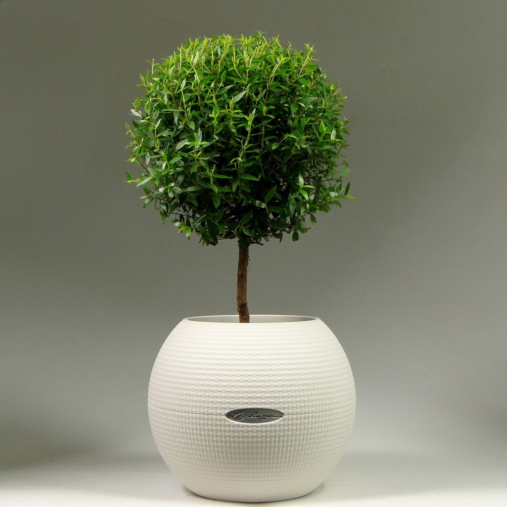

Уход и проблемы выращивания
Уход за миртом в домашних условиях заключается в следующем:

- освещение должно быть обильным. Мирт может хорошо переносить воздействие прямых солнечных лучей,
но в слишком жаркую погоду растение нужно притенять;
- необходимо, чтобы влажность воздуха была не ниже 60 %. Для этого в комнате с
растением ставят открытые емкости с водой или увлажнитель воздуха;
- Температура должна быть умеренной. В летнее время оптимальными условиями выращивания считают +18…+23 градуса.
Зимой растение содержат в холодном помещении при температуре +6…+8 градусов;
- Если в зимнее время в помещении тепло, то необходимо часто поливать растения и регулярно опрыскивать листья.
После полива воду из поддона сразу же сливают, чтобы не началось загнивание корневой системы. В жаркую летнюю
погоду мирт полностью обливают под душем каждые несколько дней.